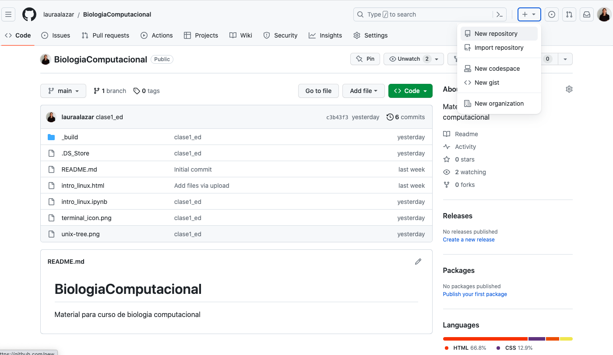
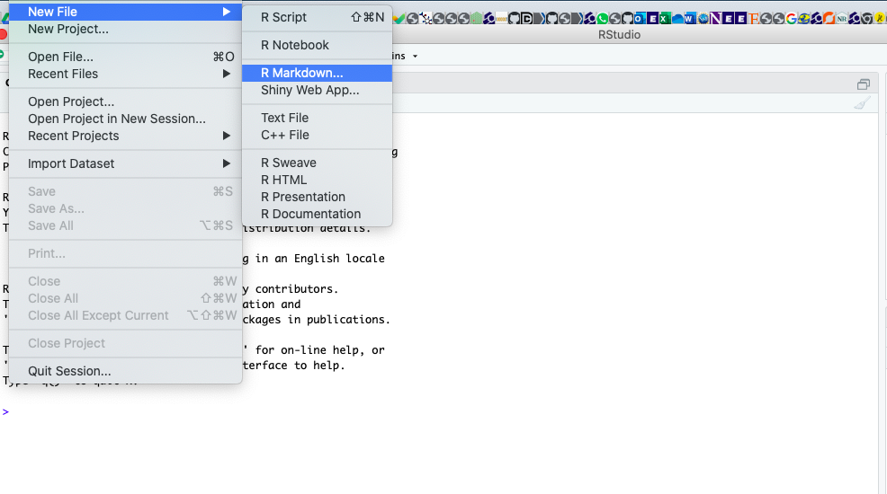
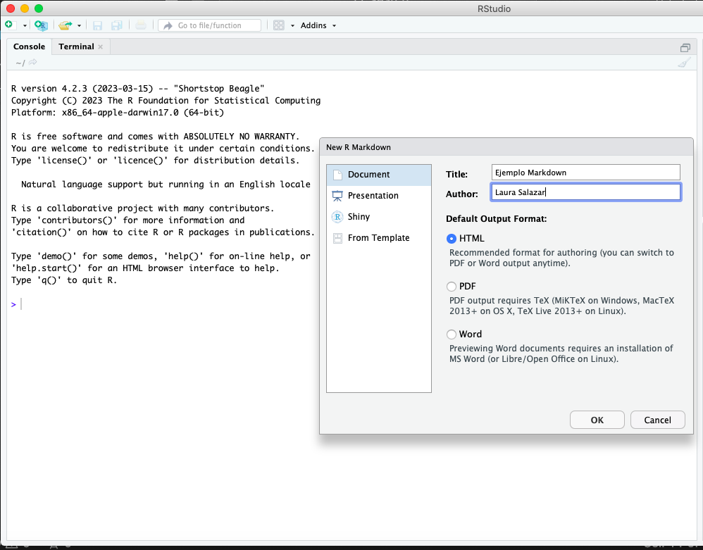

Introducción a Github#
GitHub es una plataforma muy útil donde se puede almacenar coódigo, compartirlo, revisarlo, actualizarlo y en general colaborar con programas y códigos. Para hacer uso de esta plataforma hay que registrarse con un email:
Entre a la página web
Haga Click en “Sign Up”
Suministre un correo electrónico y un password
Nota: Si ya tiene cuenta en GitHub, tan solo click en Sign in y acceda con su correo y contraseña
Crear un repositorio#
Un repositorio es un conjunto de archivos que hacen parte de un proyecto. Por ejemplo, el conjunto de datos que acompaña el estudio sobre RNAseq que hemos utilizado como ejemplo está alojado en lauraalazar/RNAseq-Drosophila-parasitoids. Un repositorio permite compartir los archivos del proyecto, actualizarlos y guardar versiones pasadas. También permite que otros colaboren de forma sistemática y organizada. Una vez hagas el registro, recibirá un email para entrar a su cuenta de GitHub
Entrar a la cuenta con el email y clave registradas
Hacer click en + y New repository
Darle un nombre al repositorio. Ej, proyecto_biocomp
Hacer una breve descripción de lo que se trata. Ej: proyecto para el curso de biología computacional
Dar click en Create repository
Darle click en Add file
Arrastrar o subir el archivo que desea compartir
Escribir un mensaje describiendo el contenido de la carga en el campo de comentarios
Dar click en Commit changes para completar la carga
GitHub local#
Una de las herramientas más interesantes con gitHub es poder clonar repositorios de otros usuarios y mantener actualizados los repositorios personales. Para esto se puede instalar gitHub de manera [local](https://git-scm.com/downloads y sincronizar con la cuenta personal). Para hacer esto es necesario:
Configurar el usuario y correo para correrlo desde la terminal
git config --global user.name "Mona Lisa"
git config --global user.email "email@example.com"
Al conectar el Git local con GitHub donde se pedirá el password https://docs.github.com/en/get-started/getting-started-with-git/caching-your-github-credentials-in-git
Clone#
Esta función le permitirá bajar al computador local la totalidad del repositorio de interés. Es importante descargarlo en una carpeta conocida ya que luego debemos volver a acceder a ella, lo cual se puede hacer normalmente como a cualquier directorio
Cree o entre a un directorio para clonar el repositorio y escriba el comando para clonar desde una terminal de su computador
cd dir_donde_clonar_repo
git clone https://github.com/lauraalazar/Markdown_Ejemplo.git
dentro del directorio donde se ejecutó el comando debe haber un directorio llamado Markdown_Ejemplo. Ahora vamos a generar un script local y luego agregarlo a esta carpeta
R Markdown#
Abra RStudio y cree un archivo R Markdown file
Dele un título y autor y escoja la opción “html” (esto se puede cambiar luego para generar un pdf, pro ejemplo)
Inmediatamente se genera un archivo plantilla con comandos de ejemplo que después se pueden editar y con una página muy completa para encontrar información https://rmarkdown.rstudio.com/. Guarde este archivo en el directorio donde clonó el repositorio. El objetivo es que este ejemplo posteriormente se subirá en este repositorio.
Ahora de clic en knitr para generar el output en html
Ahora entre al directorio del repositorio, donde debe aparecer el archivo html que se acaba de crear. Este archivo aún no aparece en github. Para incluirlo vamos a hacer un “Push”
Push#
Esta función le permitirá subir archivos a un repositorio clonado en el computador local. Aquí se deben seguir ciertos pasos, todos precedidos por el comando git:
El status del directorio ``status: si ha habido clambios
Añadimos los nuevos archivos o directorios (o todo
-A)add
Se comprometen los cambios con
commity se añade un mensaje que acompaña al cambio
Se actualiza el repositorio
push
cd /dir_donde_clono_repo/Markdown_Ejempl/
git status
git add -A
git status
git commit -m "adicion de markdown"
git push
Ahora refresque la página de github en la web y verá los archivos añadidos. Para visualizar el html en formato amigable desde github, vaya a la página del archivo:
Abra el GitHub que contiene el html que quiere visualizar en el browser
Click en el archivo html
De click en el botón
…de más accionesy escoja “copy permanent link”.
Vaya a Raw.githack.com y pegue el link en el campo de input Step 5: Copy the URL in the production field and paste it into the browser
https://www.geeksforgeeks.org/how-to-render-github-html-code-in-browser-without-downloading/
Python Notebook Markdown#
Entre a https://jupyter.org/try-jupyter/lab/index.html. El archivo “Intro.ipynb” contiene un ejemplo completo de los comandos y el formato para escribir texto, formulas, comandos y gráficos.
Para crear un nuevo notebook de click en la pestaña adyacente con un “+”. Para modificar el nombre del proyecto, de click derecho y “rename”. Para entrar en modo de texto, despliegue la flecha hacia abajo y escoja “Markdown”. Aquí puede escribir el título principal (predecedido por “#”). Para correr y visualizar
Un fragmento de código se puede correr entrando en modo “Code” (desplegando la pestaña con flecha hacia abajo). Esto indica que este fragmento (“chunk”) es ejecutable. Para ejecutarlo, de click en el triángulo.

Finalmente, puede descargar este notebook y compartirlo vía GitHub para colaborar con sus compañeros
El proyecto se podrá realizar en parejas o máximo 3 personas. La forma de entrega será en formato artículo:
Introducción: planteamiento de un problema o motivación sobre secuencias, una predicción o anotación de una proteína o análisis filogenético
Metodología: descripción de bases de datos consultadas, comandos, programas (y versiones) utilizados
Resultados: gráficas, tablas y descripciones
Discusión: respecto a la motivación o planteamiento del problema, donde se ubican sus resultados? Cuales fueron los nuevos a prendizajes y limitaciones encontradas? Puede proponer formas de avanzar en este tema?
Bibliografía
Bases de Datos mas usadas#
Refseq (http://www.ncbi.nlm.nih.gov/refseq) is a database of genome sequences that contains the high-quality genome sequences of important reference species like Homo sapiens and Escherichia coli. Istrucciones correrlo local: https://ncbi.github.io/magicblast/cook/blastdb.html
The largest databases of nucleotide sequences (genes, genomes, and sequence fragments) are those of the three partners of the International Nucleotide Sequence Database Collaboration (INSDC) that serve three corners of the world: the European Bioinformatics Institute of the European Molecular Biology Laboratory (EBI-EMBL, http://www.ebi.ac.uk/services), Genbank at the National Center for Biotechnology Information (NCBI, http://www.ncbi.nlm.nih.gov/genbank), and the DNA Data Bank of Japan (DDBJ, http://www.ddbj.nig.ac.jp). The data in these databases is mirrored, and in 2014 consisted of over 654 billion nucleotides in sequences from from over 280 thousand formally described species (Benson et al. 2014).
The raw output of DNA sequencing machines consists of vast datasets of unannotated reads that are stored in repositories like the European Nucleotide Archive (ENA, http://www.ebi.ac.uk/ENA). Researchers have often only analyzed one aspect of these datasets, so a lot remains to be discovered by so-called “data recycling”.
The UniProt KnowledgeBase (http://www.uniprot.org) contains protein sequences together with their functional annotation. EggNOG (http://eggnog.embl.de) and Pfam (http://pfam.xfam.org) are also databases of proteins that are grouped in protein families, and contain multiple sequence alignments of each protein family. EggNOG groups the proteins according to their family tree into orthologous groups in a wide range of organisms (see Section 4.5).
Transcription factor binding sites can be found in JASPAR (http://jaspar.genereg.net).
The Protein Data Bank (PDB, http://www.rcsb.org/pdb) contains information about the three-dimensional structure of proteins.
The Kyoto Encyclopedia of Genes and Genomes (KEGG, http://www.genome.jp/kegg) contains information about groups of proteins that work together in a biological system, for example in metabolic pathways.
The NCBI Taxonomy database (http://www.ncbi.nlm.nih.gov/Taxonomy) contains information about the taxonomy of all organisms from viruses to humans.